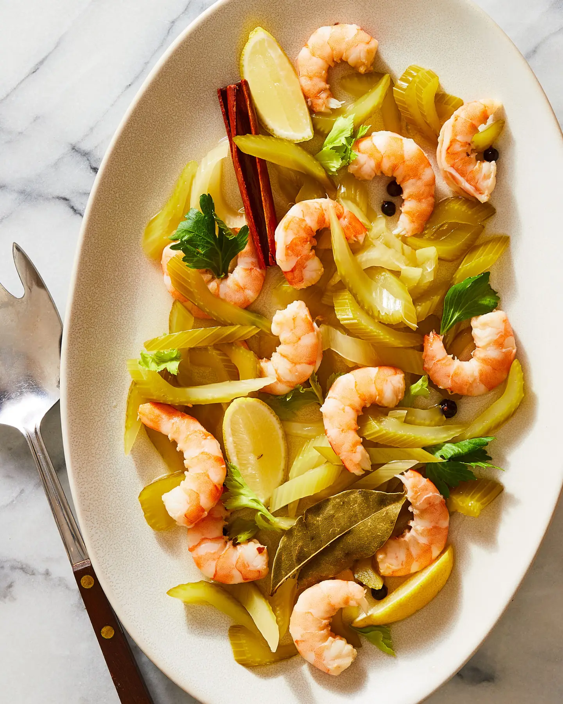

Pickled Shrimp and Celery

Description
Tender celery and snappy shrimp get pickled in mirin, rice vinegar, and
lemon juice in this tangy appetizer adapted from Canal House Cooking
Volume No. 2: Fall & Holiday
Ingredients
- 1 cup mirin
- 1 cup rice vinegar
- ¼ cup fresh lemon juice
- 3 Tbsp. sugar
- ¼ tsp. crushed red chile flakes
- 20 black peppercorns, divided
- 10 juniper berries
- 4 bay leaves, divided
- 2 cinnamon sticks
- One 2-in. piece ginger, thinly sliced